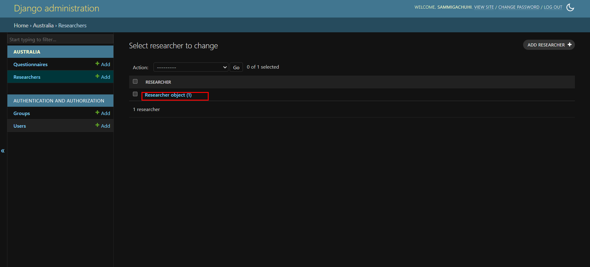
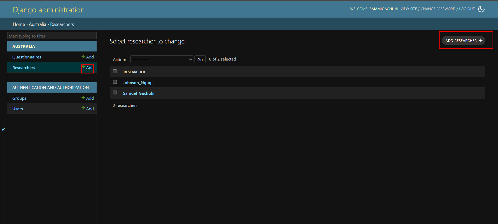
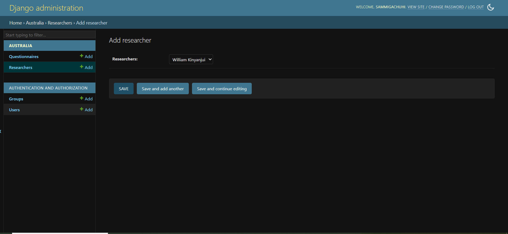
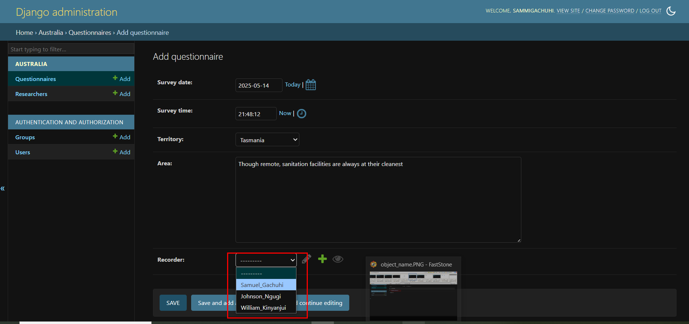
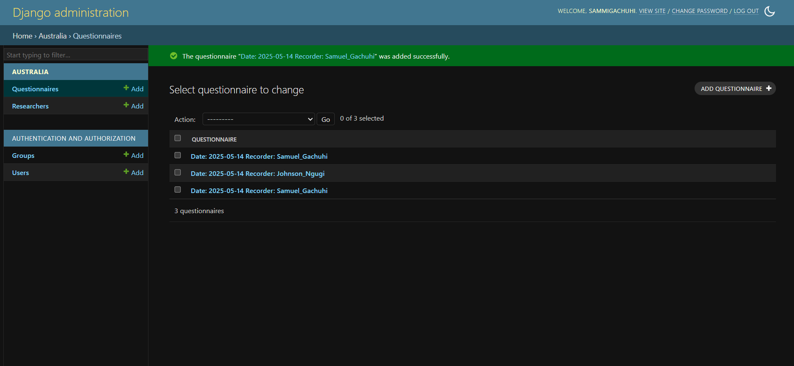

Chapter 12: Foreign keys
What is a foreign key?
A foreign key in Django is a field in your table that is used to link two tables together. Think of it as a field that enables a many-to-one relationship where a single author can have multiple books, a single customer can shop various items and a single blog can have many comments. A foreign key is what will be used to link a single row to several records and vice versa.
We already have a model that collects basic information: survey_date, survey_time, territory, and area. We would like to go a step further. The original idea was to create a dynamic choices list where we would have multiple-select question. This would then be followed up by a second single-select question whose values would be dependent on the choice value in the preceding question. However, that proved tricky as explained in this stack exchange. Nevertheless, we proceeded with the idea of Foreign keys as it is an important topic in Django.
Modify the models
In our models.py file, we would like to create the model that will be used to select all the team members that were part of the interviewing team.
Let's do so:
from django.db import models
from datetime import date
from django.utils import timezone
# Create your models here.
class Researcher(models.Model):
RESEARCHERS_LIST = {
"Bwana_Waziri": "Bwana Waziri",
"Samuel_Gachuhi": "Samuel Gachuhi",
"Jane_Otieno": "Jane Otieno",
"Janet_Awino": "Janet Awino",
"William_Kinyanjui": "William Kinyanjui",
"Johnson_Ngugi": "Johnson Ngugi"
}
researchers = models.CharField(choices=RESEARCHERS_LIST, default="Bwana_Waziri")
def __str__(self):
return self.researchers
In the above, we define a dictionary called RESEARCHERS_LIST that will contain names of our field members.
We also pass a def __str__(self). This function is used to return the name of the value to be rendered on the admin, and not something like Researcher object (1) as shown below.

For the Questionnaire model, we add the following lines:
recorder = models.ForeignKey(Researcher, on_delete=models.CASCADE,)
def __str__(self):
return f"Date: {self.survey_date} Recorder: {self.recorder}"
The above does the following:
- The
recordervariable is a ForeignKey object. Themodels.ForeignKeytakes at least two parameters: the model to refer from and theon_deleteoption. Here, we define the reference model asResearcherand theon_deleteasmodels.CASCADE. On the latter, themodels.CASCADEoption sets the model to always delete the recorder name if that parent researcher object has also been deleted. In other words, it cascades the effects.
We also define a def __string__(self) here which will show on the Django admin webpage the date at which the questionnaire was filled and by which recorder.
Register models
Since we had a created a new Researcher model, we will have to add it to the admin.py page. The admin.py is used to display our models in the Django website.
Let's add our Researcher model in the admin.py file. Notice that we first call it before registering, otherwise Django won't know it is there.
from django.contrib import admin
from .models import Researcher
from .models import Questionnaire
Now let's add the Researcher model.
class ResearchersAdmin(admin.ModelAdmin):
fields = ("researchers",)
Now let's finally register the model.
admin.site.register(Researcher, ResearchersAdmin)
Migrate
To keep a record of all the changes we've made to our models, run:
python3 manage.py makemigrations australia
The last part, australia species we will only snapshot the migrations to the model(s) in our australia app.
Then let implement the changes in the database:
python3 manage.py migrate australia
You will see a new message related to updating missing fields. Just go with the first option of 1) in all cases.
Thereafter, run python3 manage.py runserver. Go to the localhost http://127.0.0.1:8000/admin for all matters admin.
The interface should be self-explanatory. Add a Researcher variable
by using the buttons with the + sign.

Once you've added another researcher from the dropdown, hit SAVE.

Add a couple of more recorders.
Create a new Questionnaire by clicking the button with ADD QUESTIONNAIRE +.
The previous questions of Survey date, Survey time, Territory and Area will be there. But you will also see the Recorder dropdown which upon clicking will display the names of all the added Researchers.

Select one of the researchers from the dropdown and hit SAVE.

The record will be saved and displayed on the Questionnaires webpage.